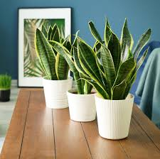
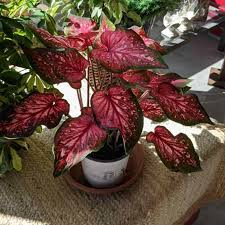

Tóxica para los gatos y perros si la comen. Ver relacionadas
La fascinante sansevieria es una planta popular en jardinería
por el atractivo de sus hojas que le han hecho ganar el
reconocimiento que otorga la Real Sociedad de Horticultura
de Inglaterra al Mérito del Jardín. Además, la planta tiene
una gran resistencia a las condiciones climáticas desfavorables.
Caladio

Es una especia muy tóxica, especialmente para los animales domésticos. Ver relacionadas
El caladio puede representar un desafío para quién decida cultivarla.
Sus grandes hojas con forma de corazón y atractivos colores crecen
durante la primavera y el verano, y mueren en otoño, cuando toda
la planta entra en período de dormancia.